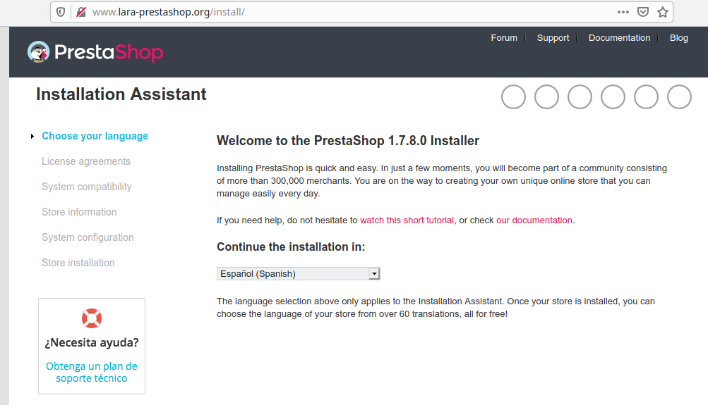
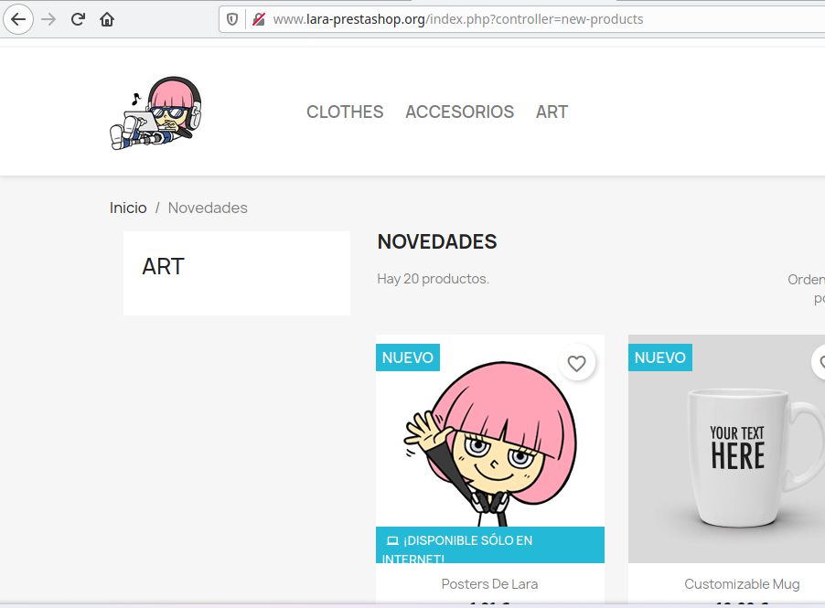
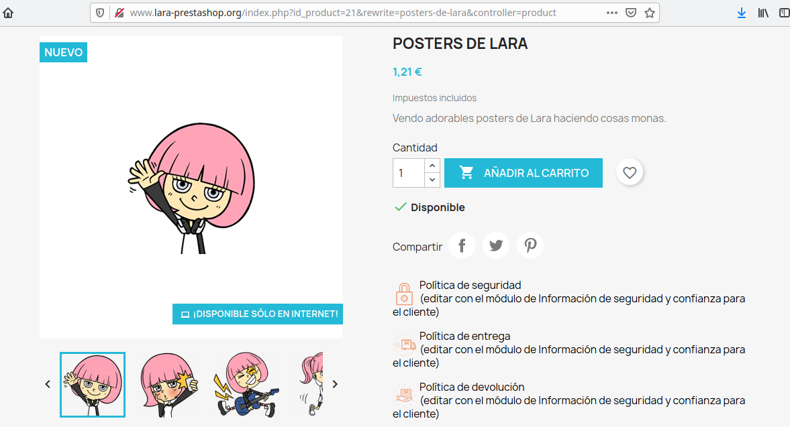

Prestashop es un sistema de gestión de contenidos (CMS) libre y de código abierto, diseñado en PHP y enfocado en el comercio electrónico, donde los usuarios podrán vender sus productos y personalizar la tienda en línea de una manera ágil y sencilla. En el siguiente enlace encontraréis información más detallada sobre las ventajas de Prestashop:
Instalación de Prestashop
Para instalar Prestashop, he creado una instancia en Vagrant basado en un box de Debian 11 Bullseye. Una vez levantada la máquina, dentro he instalado un LAMP, tal y como explico en este artículo. Posteriormente, crearemos un Virtualhost para acceder al CMS mediante un nombre de dominio:
<VirtualHost *:80>
ServerAdmin webmaster@localhost
ServerName www.lara-prestashop.org
ServerAlias www.www.lara-prestashop.org
DocumentRoot /var/www/www.lara-prestashop.org
ErrorLog ${APACHE_LOG_DIR}/error.log
CustomLog ${APACHE_LOG_DIR}/access.log combined
<Directory /var/www/www.lara-prestashop.org>
Options -Indexes
</Directory>
<IfModule mod_dir.c>
DirectoryIndex index.php index.html index.cgi index.pl index.xhtml index.htm
</IfModule>
</VirtualHost>
En el fichero he añadido la siguiente configuración:
- En el caso de no encontrar el fichero
index.html, no se mostrarán los directorios - En el orden de prioridad del index, los ficheros PHP estarán por delante de los HTML.
Guardamos el fichero y reiniciamos el servicio de Apache. A continuación, entramos en la base de datos y creamos un usuario:
GRANT ALL PRIVILEGES ON *.* TO 'lara'@'localhost' IDENTIFIED BY 'lara';
Descargamos el paquete comprimido de Prestashop desde la página web oficial, rellenando para ello el pequeño formulario que nos aparece, y lo pasamos por scp a la instancia de Vagrant:
scp prestashop_1.7.8.0.zip vagrant@192.168.121.116:/home/vagrant/
Dentro del vagrant, extraemos el fichero comprimido en el directorio raíz:
sudo unzip -d /var/www/www.lara-prestashop.org/ prestashop_1.7.8.0.zip
Accedemos a la URL desde el host para realizar la instalación, y nos informarán de que tenemos que instalar la extención PHP zip:
No pasa nada, instalamos el paquete que nos piden y recargamos apache2:
sudo apt install php-zip
sudo systemctl reload apache2
Volvemos a probar, y ahora nos pide la extensión PHP Simple XML:
Bueno, va, instalamos también esa extensión:
sudo apt install simplexml-php
sudo systemctl reload apache2
Por fin, nos aparece el asistente de la instalación de Prestashop:

No, amigos, no os emocionéis aún, que esto aún no ha acabado. Prestashop también nos pedirá una serie de extensiones de PHP (php-gd, php-intl, php-curl y php-mbstring) y el módulo rewrite de Apache2.
Instalamos las extensiones, habilitamos el módulo rewrite en /etc/apache2/mods-enabled con sudo a2enmod rewrite, reiniciamos el servicio y seguimos con la instalación de Prestashop.
Una vez terminada la instalación, nos dirigimos al back-office para gestionar la tienda (añadiendo en la URL el directorio "admin" e introduciendo nuestro usuario y contraseña de administrador). Dentro, podéis hacer los cambios que consideréis conveniente. Yo he cambiado el favicon y el logo de la página (no he cambiado la plantilla, porque los temas son de pago). También he publicado un producto nuevo en la tienda.
 
Para instalar un módulo en Prestashop, nos vamos al catálogo. Yo he instalado el módulo "Visitors online", que se encarga de realizar estadísticas y añade una lista de los visitantes que están navegando por la tienda.
Configuración multinodo
A continuación, vamos a realizar una configuración multinodo, es decir, tendremos la aplicación web en una máquina y la base de datos en otra. Para ello, necesitaremos una nueva instancia, aunque antes de crearla exportaremos los datos de la aplicación que tengamos en la base de datos. En mi caso, como estoy utilizando MariaDB, ejecutaré el siguiente comando para extraer todos los datos y almacenarlos en un fichero SQL:
mysqldump -v --opt --events --routines --triggers --default-character-set=utf8 -u lara -p prestashop > db_backup_prestashop_`date +%Y%m%d_%H%M%S`.sql
Después, creamos otra máquina conectada con una red interna a la primera (ya que la base de datos no deberá ser accesible desde el exterior), editando el fichero Vagrantfile:
Vagrant.configure("2") do |config|
config.vm.define :nodo1 do |nodo1|
nodo1.vm.box = "debian/bullseye64"
nodo1.vm.provider :libvirt do |v|
v.memory = 1024
end
nodo1.vm.network :private_network,
:libvirt__network_name => "muyaislada",
:libvirt__dhcp_enabled => false,
:ip => "192.168.100.2",
:libvirt__forward_mode => "veryisolated"
end
config.vm.define :nodo2 do |nodo2|
nodo2.vm.box = "debian/bullseye64"
nodo2.vm.hostname = "nodo2"
nodo2.vm.synced_folder ".", "/vagrant", disabled: true
nodo2.vm.network :private_network,
:libvirt__network_name => "muyaislada",
:libvirt__dhcp_enabled => false,
:ip => "192.168.100.3",
:libvirt__forward_mode => "veryisolated"
end
end
Configuramos una base de datos en el segundo nodo y creamos un nuevo usuario, tal como lo hicimos la primera vez, y restauramos la base de datos con la copia de seguridad:
mysql -u lara --password=lara prestashop < db_backup_prestashop_20211021_172335.sql
En la primera máquina, desinstalamos el servidor de base de datos para asegurarnos de que coja los datos del segundo nodo:
sudo apt remove mariadb-server
Ya no hay vuelta atrás.
Para que la página funcione desde el nodo2, cambiamos la dirección IP del servidor en el fichero /etc/hosts del anfitrión, mientras que en el nodo1 editamos el fichero /app/config/parameters.php y cambiamos la IP del host por la del nodo2.
Entramos en el nodo2 y configuramos MariaDB para el acceso remoto. Para ello, vamos al fichero /etc/mysql/mariadb.conf.d/50-server.cnf y comentamos la siguiente línea:
#bind-address = 127.0.0.1
Ahora podemos volver acceder a la página web.